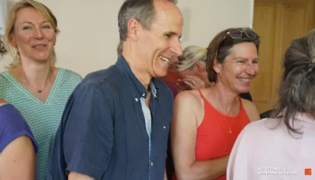
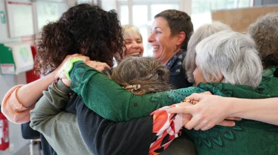

Rire en entreprise
Boostez la cohésion, le bien-être et la créativité de vos équipes

Des ateliers adaptés à votre entreprise
Esprit d'équipe
Rire en groupe abat les barrières d'âges, de cultures, de hiérarchies. Le rire favorise l'ouverture aux autres et une meilleure communication entraînant un meilleur travail d'équipe. Le rire développe les relations interpersonnelles. Rire ensemble permet de créer un groupe soudé. On ne rit pas des collègues mais avec eux. Rire ensemble cultive le sentiment d'appartenance.
Communication améliorée
Le rire améliore la confiance en l'autre, et facilite les rapports humains dans l'entreprise. Développer une forme d'humour bienveillant favorise la communication. Le rire permet de désamorcer une situation difficile.
Motivation et confiance en soi
Le rire est une extériorisation puissante. En prenant l'habitude de rire en public, on accepte de se dévoiler, et on devient plus à l'aise pour exprimer ce que l'on ressent. Cela permet également d'apprendre à maîtriser l'autodérision. Rire de ses maladresses ou de ses petits défauts est extrêmement libérateur.
Créativité et productivité
Les exercices de rire basés sur le jeu stimulent l'hémisphère droit du cerveau, siège de la créativité. Le rire permet de façon ludique de prendre du recul face aux problèmes ou aux conflits. Les respirations profondes et dynamiques du rire entraînent une meilleure oxygénation du corps et une efficacité augmentée.
Bien-être personnel
Un employé bien dans sa peau et dans son corps. Le rire a des impacts directs sur la santé : il augmente les défenses immunitaires, permet de garder la forme, fait baisser la tension artérielle, diminue les états d'anxiété ou dépressifs.
Lutte contre le stress
En riant, le corps sécrète des endorphines qui sont des hormones réduisant le stress. En outre, il permet d'un point de vue musculaire, de détendre nos muscles et d'oxygéner notre cerveau, ce qui favorise la relaxation et la détente générale, libérant ainsi les tensions corporelles et psychiques.

Ateliers cohésion d'équipe